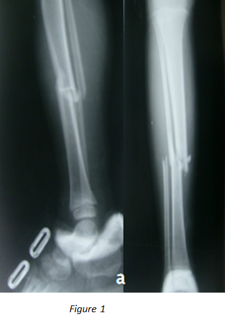
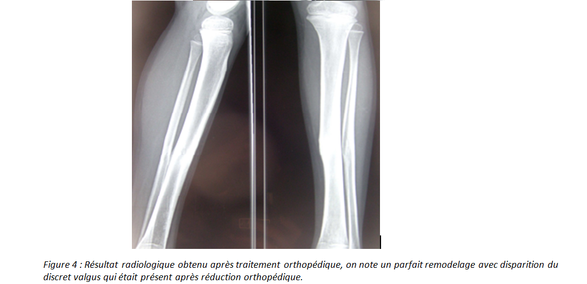
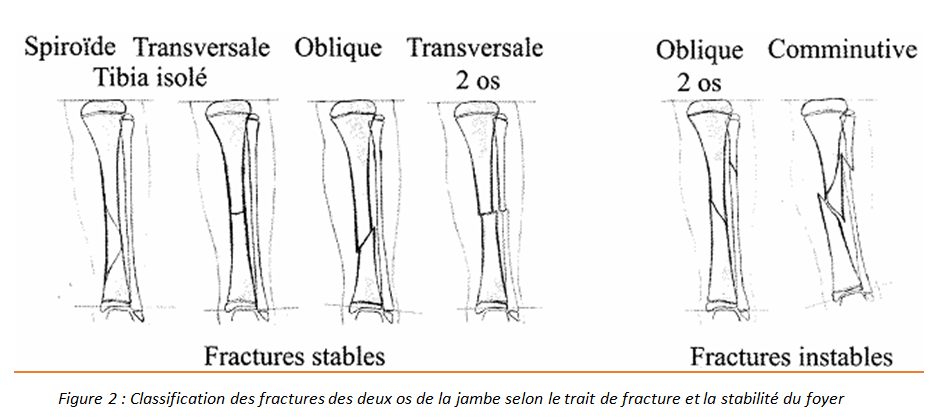

Cas clinique 18
Jambe
Enfant de 6 ans s’était présenté aux urgences suite à un accident de la voie publique à point d’impact au niveau de la jambe gauche.
À l’examen, le patient avait présenté une impotence fonctionnelle totale du membre inférieur gauche associée à une douleur exquise à la palpation de 1/3 moyen de la jambe gauche. Il n’y avait pas d’ouverture cutanée ni de complications vasculo-nerveuses.
2.Que faut-il rechercher systématiquement ?R2
Résultat radiologique obtenu après traitement orthopédique Figure 4
Réponse :
Fracture des deux os de la jambe a trait transversal avec déplacement externe sans angulation
Réponse :
- -Ouverture cutanée.
- -Lésions vasculaires : lésion de l’artère tibiale antérieure ou postérieure.
Toute ischémie constatée constitue une extrême urgence de prise en charge.
- -Lésions nerveuses : nerf fibulaire commun ou ses branches et le nerf tibial.
On procède à une réduction manuelle au bloc opératoire sous anesthésie générale avec contrôle scopique sous amplificateur de brillance puis à une immobilisation plâtrée : on confectionne un plâtre cruro-pédieux que le patient gardera pendant 3 mois. (Figure 3)

Réponse :
Syndrome de loge : il est toujours redouté lors des fractures de jambe. Ce risque justifie une surveillance accrue lors des premières heures après la fracture et après le traitement.
Commentaire :
Les fractures de jambe sont une localisation fréquente des fractures de l’enfant. Elles représentent la troisième localisation fracturaire après les fractures du fémur et de l’avant bras.
Elles touchent le garçon dans 70 % des cas, vers l'âge de 8 ans. Leur prévalence est en augmentation en rapport surtout avec les accidents de la voie publique et les traumatismes sportifs.
Dans 70 % des cas seul le tibia est fracturé.
Commentaire :
- -Atteinte de l’artère poplitée ou l’une de ses branches est évaluée à 10% : il faudra rechercher les pouls avant et après toute manœuvre de réduction.
- -Lésion ligamentaire associée dans 50% des cas : touchant le ligament collatéral médial ou le ligament croisé antérieur.
- -Lésions neurologiques : les lésions du nerf tibial et du nerf fibulaire commun sont rares mais devront être recherchées systématiquement.
- -Ouverture cutanée.
Commentaire :
La fracture de jambe de l’enfant reste d’une pratique courante en traumatologie infantile. Généralement bénigne, son traitement doit rester aussi orthopédique que possible et tenir compte des possibilités de remodelage que procure le jeune âge de ces blessés.
La réduction d’une fracture déplacée est effectuée sous anesthésie générale, jambe pendante au bord de la table. Après vérification radiologique de l’alignement, un plâtre cruro-pédieux est immédiatement confectionné, genou fléchi, cheville à angle droit ou même en équin pour éviter le recurvatum du foyer de fracture. Le membre inférieur est surélevé pendant 48 heures et béquillage sans appui autorisé en fonction de l’âge de l’enfant. La confection du plâtre cruro-pédieux mobilise un aide. Le jersey protecteur ne doit ni plisser, ni être un facteur de compression supplémentaire. Une seule couche de coton est appliquée sur toute la longueur avec une discrète tension et renforcée sur le péroné proximal (protection du nerf sciatique poplité externe). L'épaisseur du Jersey peut être doublée, voire triplée sans mettre de coton. L'aide ne doit pas tracter le pied par le Jersey (risque escarre talon).
La cheville doit être immobilisée en légère équin de 20° (détente du triceps sural) dans les fractures des 1/3 moyen et distal, et 10° pour les fractures du 1/3 proximal (prévention de déformation secondaire en recurvatum). Le plâtre est préféré à la résine : il doit être soigneusement moulé, en immobilisant en premier le segment jambier. Puis le plâtre est complété en cruro-pédieux genou en flexion à 45° environ, pour mieux contrôler la rotation et éviter une remise en charge prématurée.
La durée d’immobilisation est de l'ordre de 8 à 16 semaines chez l'adolescent.
Commentaire :
Les signes à rechercher sont :
- Douleur en particulier des extrémités : à elle seule, elle doit faire suspecter ce diagnostic et débuter sa prise en charge en extrême urgence.
- Paresthésies, anesthésie et des signes moteurs pouvant aller jusqu’à la paralysie complète.
- Puis tardivement s’installent des signes d’ischémie : L’abolition des pouls est tardive et ne doit pas retarder le traitement.
Figure 1

Figure 1

Pour approfondir :
MÉCANISME :
- Fractures par torsion : trait spiroïde ou oblique du 1/3 moyen ou inférieur du tibia.
- Chez le grand enfant ce type de fracture traduit la violence du mécanisme tel qu’un accident de la voie publique.
- Chez l’enfant de moins de 4 ans ce type de fracture survient le plus souvent suite à une rotation du corps autour du pied resté fixe (entravé).
- Fractures en flexion : trait spiroïde court ou oblique du 1/3 moyen du tibia avec possibilité d’effraction cutanée.
- Fractures par choc direct : trait transversal d'un ou des deux os de la jambe.
- Fractures par compression : trait complexe du 3/4 inférieur de jambe.
CLASSIFICATION : (Figure 2)
La classification des fractures de la jambe est en fonction du trait de fracture et de la stabilité du foyer.
Le trait peut être oblique, spiroïde, transversal ou communitif.
On distingue alors :
- LES FRACTURES STABLES :
- Fracture du tibia isolé avec un trait de fracture spiroïde, oblique ou transversal.
- Fracture des 2 os de la jambe à trait transversal.
- LES FRACTURES INSTABLES :
- Fracture des deux os de la jambe à trait oblique ou communitif.

Pour approfondir :
L’épiphysiodèse est la complication la plus redoutable
Lorsque le pont est central, la conséquence est l’arrêt de la croissance, le raccourcissement est la conséquence d'un traumatisme survenu soit en cours de croissance soit un traumatisme violent avec un déplacement important. Le raccourcissement constitue la complication la plus redoutable. Il est le témoin d'une épiphysiodèse plus ou moins complète du cartilage de croissance. Cette épiphysiodèse peut être définitive et est d’autant plus grave que le décollement survient à un âge plus bas.
Lorsque le pont est latéral la conséquence est une déviation axiale. Elle est la conséquence d’une épiphysiodèse incomplète.
Au cours des lésions épiphysaires, l'épiphysiodèse s’observe surtout dans les fractures de type IV et V de Salter et Harris mais peuvent aussi se rencontrer, bien que plus rarement, dans les lésions de type III.
Références
- El achouri N.
Les fractures de la jambe chez l’enfant
Thèse de médecine N° 77,2005
- Vander Eleste.
Histoire de l’orthopédie et de la traumatologie
Histoire de la médecine (tome 5) pp.51-86
Matrise Orthopédique n116 – août 2002
- Mallet J.
Les fractures de jambe chez lenfant. Les fractures des membres chez lenfant.
Monographie du GEOP sous la direction de JM Clavert, JP Mtaizeau.
Sauramps Montpllier 1990
- Meyrueis P , Cazenave A.
Consolidation des fractures, Fracture healing.
EMC-Rhumatologie Orthopédie 1 (2004);138-162
- Dimeglio A, Bonnel F.
La consolidation osseuse chez lenfant, du normal au pathologique.
Consolidation osseuse. ParisMasson; 1986. p. 95-102.
- Ahmad E.
Traumatologie de lenfant.
Corpus Mdical Facult de Mdecine de Grenoble 2005(237)
- Chotel F. Berard D.Parot R.
Fractures de lenfant.
Monographie du GEOP.
Montpellier-Sauramps médical;2002
- Dendane M.A. Karout Y. Amrani A. El AlamZ.F. Gourinda H.
Lembrochage centromdullaire lastique stable des fractures diaphysaires du tibia chez lenfant Journal de traumatologie du sport 2009; 26:85-90